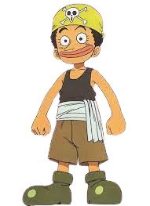
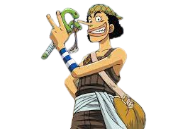
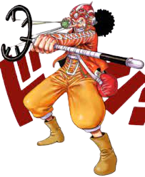

Usopp
conhecendo o personagem
  
Usopp também é um dos primeiros membros que entrou nos Piratas do Chapéu de Palha e ele é um dos amigos mais próximos de Luffy. Ele tem a fama de ser um grande mentiroso desde o começo por inventar histórias exageradas sobre si mesmo. A primeira recompensa de Usopp foi de 30.000,000 de berries, mas seu cartaz de procurado se referia a ele pela sua outra identidade chamada Sogeking. Apesar de não ter uma força monstruosa como os seus companheiros, Usopp se destaca como um atirador. A princípio, sua munição principal eram balas explosivas, mas, depois de treinar com Heracles, Usopp passou a usar as sementes Pop Green como munição. Com essas munições, ele dispara várias sementes que se tornam plantas com poderes diferentes. Agora a sua recompensa é de 500.000.000 de berries e seu cartaz se refere a ele como “God” Usopp.